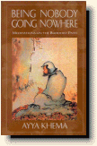
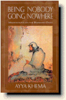

|  |
Vô
ngã, Vô ưu
|
 |
|
BuddhaSasana Home Page |
Vietnamese, with Unicode Times font |
|  |
Vô
ngã, Vô ưu
|
|
|
Chương 2 Anh Hưởng của Thiền đến đời sống chúng ta.T rước hết ta phải tẩy uế, thanh lọc tâm. Nhưng không thể có tâm thanh tịnh, nếu như thân ô uế, vì thế, ta cũng cần tẩy rửa các thứ tạp uế đã chất chứa trên thân thể ta bấy lâu nay.Hãy tưởng tượng một người đã sống trong một ngôi nhà đã hơn hai mươi, ba mươi năm không dọn dẹp. Bao nhiêu thức ăn thừa thãi, quần áo bẩn thỉu, rác rưởi đã chất đến trần nhà. Phải sống giữa đống rác đó thật hôi thối, khó chịu. Nhưng nguời chủ sống ở đó thì chẳng hề bận tâm, cho đến một ngày có người bạn ghé qua và nói: "Sao bạn không dọn nhà mình cho sạch sẻ?". Rồi hai người bạn bắt tay vào dọn dẹp một góc nhà. Sau đó người chủ bắt đầu thấy sống ở góc phòng sạch sẻ đó dễ chịu hơn. Nên dọn dẹp cả căn nhà, người chủ bây giờ có thể ngắm quang cảnh bên ngoài, có đủ chỗ đi qua lại trong nhà. Khi chỗ ở đã trở nên thoải mái dễ chịu, người chủ mới có thể quay vào chú trọng đến nội tâm mình. Căn nhà đó là thân chúng ta. Bất kể chúng ta đi đâu: từ thành phố nầy đến xứ sở kia, từ chỗ trọ nầy đến nơi ở khác, không biết bao nhiêu lần. Ta cũng lôi kéo thân đi cùng khắp cho đến ngày nó rời rã, hư hoại, chỉ còn là một đống xương, một nhúm cát bụi. Nhưng còn chưa tới ngày ấy, ta còn phải mang thân nầy. Còn phải sống, ta còn cần phải dọn dẹp cho ‘căn nhà’ nầy được thông thoáng, sạch sẽ. dễ chịu. Các phản ứng tâm lý chất chứa bên trong lâu ngày đã che mắt tâm ta. Tâm đã dung chứa chúng thì chính tâm cũng phải tháo gở chúng. Trong Thiền, điều nầy đồng nghĩa với “nhận biết các cảm thọ, nhưng không phản ứng, rồi buông bỏ’. Bản chất của Thiền là không phản ứng. Đặc tính quan trọng đó giúp ta tìm được sự an lạc, quân bình trong tâm hồn, vì các phản ứng giống như sự chuyển động của các làn sóng phủ chụp ta, làm ta mờ mịt không thấy lối ra. Và chúng ta tiếp tục u mê. Chúng ta có thể nghe, chúng ta có thể cảm thấy, nhưng không thể nhìn thấy ‘nội tâm’ của ta. Nội tâm đó đã bị che phủ bởi các hành động, những phản ứng tình cảm của chúng ta. Khi các vọng tưởng khởi lên trong lúc tọa thiền, ta chỉ cần biết chúng dấy khởi, mà không cần có phản ứng. Và ta cũng chỉ cần làm có thế. Thái độ không phản ứng nầy cũng có thể được mang áp dụng vào đời sống hàng ngày của ta. Cảm thọ nào dấy khởi, ta chỉ cần nhận biết nó đến, rồi để nó đi. Nếu chúng ta có thể quán tưỡng được như thế lúc ngồi thiền, là ta đã học được một trong những bài học quan trọng nhất trong việc tự giải thoát mình. Thật sai lầm nếu nghĩ rằng vì chúng ta đang sống, tức nhiên ta phải biết nghệ thuật sống. Đó là một nghịch lý khác của cuộc đời. Sống là một nghệ thuật. Ai trong chúng ta chẳng tùng vấp ngã một, đôi lần trong đời. Ta gọi đó là thảm kịch, bất hạnh ‘cuả tôi’. Thật ra đó chỉ là một nghệ thuật sống chưa được hoàn hảo. Đặc tính thứ ba nhưng không kém phần quan trọng của việc tu thiền là ta có thể kinh nghiệm được tính cách vô thường của sự vật. Trừ khi tự chúng ta kinh nghiệm được điều đó, nếu không tính cách vô thường của sự vật cũng chỉ là những lời nói vô nghĩa. Và lời nói không giúp chúng ta giải thoát được. Phải tự chứng nghiệm. Con đường Đức Phật chỉ cho chúng ta là con đường nhằm đưa đến giải thoát -một sự tự do hoàn toàn, tuyệt đối, và điều đó mỗi người phải tự chứng nghiệm lấy. Khi tham thiền, hãy kinh nghiệm sự vô thường trực tiếp qua việc chú tâm vào hơi thở, ta biết rằng một hơi thở vừa vào, lại một hơi thở ra. Hơi thở trước không giống hơi thở sau. Cảm thọ nầy dấy lên, rồi qua đi. Tiếp theo một cảm thọ khác lại đến. Rồi nối nối các cảm thọ khác dấy lên, cuối cùng không còn gì nữa. Một cảm giác đau ở chân, ta trở mình, cảm giác đau biến mất. Cảm thọ đến, rồi cảm thọ đi. Với chút ít kinh nghiệm tu tập thiền, ta có thể dễ dàng nhận ra được sự vô thường của cảm thọ, đồng thời ta cũng nhận ra được sự vô thường của bản thân. Ai cũng biết thế. Người có hiểu biết đều biết rằng thân của ta, của tất cả mọi người đều vô thường, hoại diệt. Nhưng tất cả chúng ta đều sống như thể ta sẽ không bao giờ mất, ta đau khổ, khóc than khi thân nầy bị hủy hoại theo luật tự nhiên, như thể đó là việc ta không bao giờ ngờ tới. Suy nghĩ như thế là sai lầm, vô lý lắm phải không? Đó là vì chúng ta tự quay lưng lại với thực tại. Ta chỉ muốn chấp nhận cái tốt đẹp. Còn khi phải đối mặt với sự thật phủ phàng, ta tìm cách đổ lổi cho kẻ khác. Có người còn đổ cho quỷ thần, trời đất. Không cần biết ta trách móc người chung quanh hay trách trời đất, sự thật là cuộc đời đầy những vô thường, chúng ta phải chấp nhận sự thật đó để sống cho đúng. Khi chúng ta suy nghĩ thêm, ta sẽ thấy là mỗi giờ phút trôi quá, các tế bào trong cơ thể cũng thay đổi. Chúng ta ai không học điều nầy ở nhà trường. Rõ ràng là chúng ta có thể kiểm nghiệm được điều nầy. Khi lắng sâu trong Thiền định, ta có thể cảm được từng cảm giác trên da thịt mình. Ta sẽ có cái nhìn khác về chính bản thân ta, cũng như về cuộc đời, vì giờ ta đã thấu hiểu bằng chính kinh nghiệm của mình rằng không có gì bền vững, tồn tại mãi, nhất là với thân nầy. Khoa học đã chứng minh rằng không có gì trong vũ trụ là một khối. Tất cả vật chất hiện hữu đều được tạo thành bởi những phân tử di chuyển với tốc độ nhanh -đến cùng với nhau và rã tan cùng nhau- do đó chúng tạo ra ảo tưỡng của một khối vũng chắc. Đức Phật 2500 năm về truờc đã nói như thế về các phân tử, không cần đến các phòng thí nghiệm để chứng minh điều đó. Ngài đã tự kinh nghiệm điều đó và đã Giác ngộ. Các nhà khoa học cũng biết tất cả những điều nầy, nhưng họ không phải là đấng giác ngộ, vì điều họ thiếu sót là kinh nghiệm bản thân, chính họ không tự chứng được những điều nầy. Ta cũng tự biết với một chút phán đoán thông minh rằng không có gì là một khối cứng rắn. Nếu không sẽ không có cơ thể chúng ta, mà chỉ có những cái xác người. Nhưng đó là sự phán đoán của lý trí. Chưa đủ. Ta còn phải cảm nhận được điều ấy. Khi ta cảm nhận được như thế trong Thiền định, ta thật sự ‘biết’. Không ai có thể bàn cãi gì được về những kinh nghiệm của chính bản thân ta. Ngay chính như nếu có ai đó nói với ta rằng: ‘Không. Không phải vậy. Thân ta là một khối. Sao bạn không thử nắn thân thể mình thì biết. Nó là một khối cứng rắn, phải không?’, ta cũng sẽ không muốn bàn cãi, không để bị thuyết phục. Như khi có người tranh luận về những điều Đức Phật dạy, Ngài đã không cãi lại. Ngài không phải bảo vệ cho giáo lý của mình. Vì Ngài đang nói về các kinh nghiệm tự chứng. Với sự chú tâm nhất quán, thậm sâu, ta có thể ‘thấy’ được những thay đổi không ngừng trong ta. Chính tâm ta cảm nhận được điều đó, bên trong cơ thể ta, vây thì tâm phải đứng ngoài mới nhìn thấy được, vậy làm sao nói được ta là một khối rắn chắc. Tâm có thể nói rằng: ‘Nếu luôn luôn có sự chuyển đổi bên trong ta, vậy thì cái ‘tôi’ ở đâu?’ Tất cả các cảm giác luôn thay đổi. Phút trước có, phút sau không. Cơ thể luôn biến đổi. Không có gì để ‘tôi’ bám víu vào. Tư tưởng luôn thay đổi, vậy ‘tôi’ ở đâu? Nhưng dĩ nhiên là con người chạy tìm một hình ảnh tưỡng tượng để ẩn trú vào như là một con người siêu phàm (higher self), một tâm linh, một linh hồn, v..v... Nhưng xét kỹ ra, tất cả đều là ảo tưỡng. Chúng ta phải chấp nhận vô thường. Một đăc tính nữa của việc hành Thiền, chính là phương pháp Thiền mà Đức Phật đã nhắc đến trong lúc thuyết giảng về nền tảng của sự chú tâm, thiền quán về bốn yếu tố: đất nước, gió, lữa. Cảm giác về sự cứng rắn trong cơ thể thuộc về đất. Chúng ta cũng cảm được thể rắn chắc trong chiếc bồ đoàn ta ngồi. Yếu tố rắn chắc (Đất) có mặt ở khắp mọi nơi. Ngay cả trong nước cũng có, nếu không, ta đã không thể lội trong đó, hay đặt thuyền lên nước. Yếu tố đó có cả trong không khí, nếu không chim, máy bay không thể bay trong đó. Yếu tố Lửa -nhiệt độ- cũng ở khắp nơi. Nếu để ý, chúng ta có thể cảm thấy sức nóng trong thân mình. Thường ta chỉ để ý đến yếu tố nầy khi đang lạnh cóng, bị nóng quá hay lúc bị cảm sốt. Nhưng nhiệt độ luôn có mặt trong cơ thể ta. Cũng như trong tất cả mọi sinh vật. Yếu tố Nước ở trong máu, nước miếng, nước tiểu của chúng ta. Yếu tố nước cũng là sức kết, bện. Khi ta có bột, đổ nước vào, bột sẽ dính vào nhau. Nước là yếu tố kết, bện có mặt ở khắp mọi nơi. Không có nó, tất cả các tế bào di chuyển trong thân ta, sẽ tan rã. Chúng ta sẽ không thể ngồi đây nều không có nó để giữ cơ thể chúng ta lại. Tất cả những khám phá nầy thật lý thú phải không? Nhưng chúng cũng vô dụng nếu ta không kinh nghiệm được chúng. Chúng sẽ vẫn chỉ là những kiến thức tiêu khiển trong lúc tán gẫu với bạn bè. Nhưng khi ta có thể tự kinh nghiệm được, chúng sẽ trở thành sự hiểu biết sâu sắc bên trong, về vật chất quanh ta. Trí tuệ, sự nhận biết được bản chất thật của sự vật là điều Đức Phật thường hay nhắc tới. Cuối cùng là yếu tố không gian (Gió). Có không gian - những chỗ mở- trong ta, như là lổ mũi, bên trong miệng. Ngay trong nội tạng cũng có những chỗ mở. Vũ trụ là không gian. Nếu chúng ta nhận ra được những điều nầy, chúng ta sẽ thấy là tất cả đều cùng một thể, ta sẻ bớt được những suy nghĩ như -’Đây là tôi và tôi sẽ chỉ lo cho một mình tôi, không cần biết đến thế giới quanh tôi. Mong là họ cũng sống an lành, nhưng đừng có trông cậy vào tôi’. Khi chúng ta nhận ra rằng chúng ta có cũng chỉ là do các duyên hợp lại, rồi tan đi, chúng ta không là gì ngoài bốn thứ gió, lửa, đất và nước họp lại, thì ‘tôi’ là gì, đến nổi lúc nào ta cũng chăm chăm bảo vệ nó bằng mọi cách. Và thế giới còn lại, người chung quanh ta là gì, để ta phải cảm thấy bị họ đe dọạ? Thiền là nhắm đạt được giác ngộ; và giác ngộ là mục đích của người Phật tử tu thiền. Các phương tiện là những dụng cụ. Ta sử dụng chúng cách nào cho hữu hiệu hơn cả. Mỗi người một cách khác nhau. Nhưng ta càng sử dụng chúng thuần thục, thì kết quả càng nhanh chóng, dễ dàng hơn. Nên nhớ phải chú tâm vào phương tiện, không vào kết quả. Chỉ có như thế thì sự tinh xảo, thuần thục mới đến với chúng ta. -ooOoo- Ðầu trang | Mục lục | 01 | 02 | 03 | 04 | 05 | 06 | 07 | 08 | 09 | 10 | 11 | 12 | 13 |
Chân thành cám ơn chị Diệu Liên đã gửi tặng bản vi tính (B.Anson, 08-2006).
[Trở
về trang Thư Mục]
last updated: 27-08-2006